Practica-IAW-1.1- Instalación de Apache HTTP Server, PHP y MySQL Server en Ubuntu Server
Pasos previos a la instalación
para la instalación vamos a tener que crear la siguiente estructura de directorios y archivos:
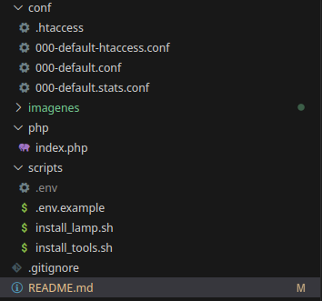
Una vez creados los archivos y directorios, procedemos a la instalación de las herramientas.
Instalación de Apache HTTP Server, PHP y MySQL Server en Ubuntu Server
1. Creación del archivo install_lamp.sh para la automatización del proceso de instalación
Actualizamos el sistema y mostramos los comandos que se van ejecutando.
sudo apt update
sudo apt upgrade -y
set -ex
1.1 Instalación del Servidor web Apache
Paso 1: Instalamos el servidor web Apache
apt install apache2 -y
Paso 2: Habilitamos el módulo rewrite
a2enmod rewrite
Paso 3: Copiamos el archivo de configuracion de apache
cp ../conf/000-default.conf /etc/apache2/sites-available
[!IMPORTANT]
Tenemos que hacer un archivo de configuración llamado000-default.confy copiarlo en los sitios disponibles de apache para que lo podamos habilitar. El archivo000-default.conftiene que quedar como en la imagen:
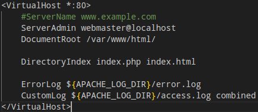
Paso 4: Instalamos PHP y algunos módulos para Apache y MySQL
apt install php libapache2-mod-php php-mysql -y
Paso 5: Reiniciamos el servicio de apache para aplicar los cambios
systemctl restart apache2
1.2 Instalación de MySQL Server
Paso 1: Instalamos MYSQL server
apt install mysql-server -y
Paso 2: Copiamos el archivo de prueba de PHP en /var/www/html
cp ../php/index.php /var/www/html
[!NOTE]
Para esto, hace falta un archivoindex.phpy que contenga el siguiente contenido:
"<?phpphpinfo();
?>"
[!IMPORTANT]
Esto se hace debido a que en el archivo de configuración000-default.confpusimos una línea que hace que priorice los archivos php frente a los html. Esa línea es:DirectoryIndex index.php index.html
Paso 3: Modificamos el propietario y el grupo del archivo index.php
chown -R www-data:www-data /var/www/html
:warning:Lo modificamos ya que el grupo www-data pertenece al usuario con el que se ejecuta el servicio Apache y necesita permisos para ver, leer y escribir dentro de ese directorio.
Paso 4: comprobación de que la página index.php funciona
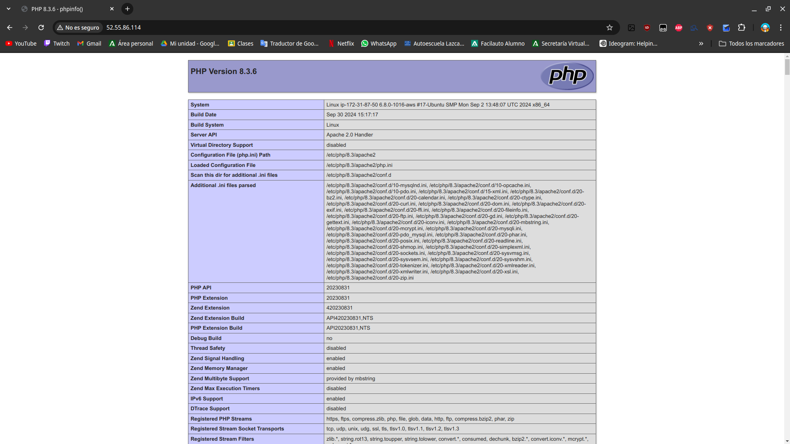
Paso 5: comprobación de que el servicio MySQLServer funciona
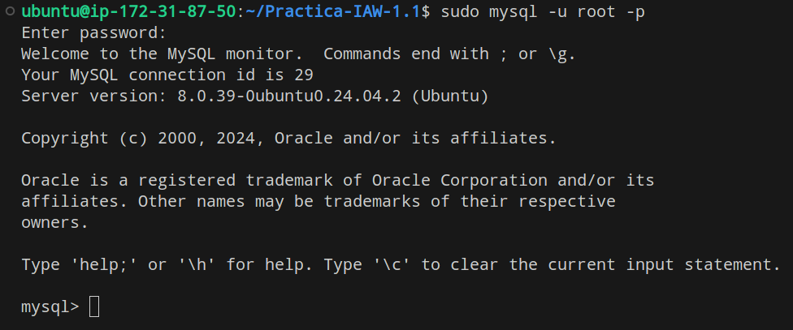
2. Creación del archivo install_tools.sh para la automatización del proceso de instalación
Importamos el archivo de variables
source .env
[!NOTE]
Este archivo de configuración se hace para que lo que vamos a hacer mas adelante reconozca las variables configuradas en ese archivo. Todas las variables que aparezcan en este documento, están dentro del archivo.env[!WARNING]
Otra cosa a tener en cuenta es que este archivo es publico en el repositorio y pues toda la gente que vea el repositorio puede ver las contraseñas y usuarios que tiene el archivo, asi que para evitar eso, hacemos un archivo.gitignorey dentro de él ponemos.envpara que ignore ese archivo para que a la hora de subirlo esté oculto al público. Lo que podemos hacer para que la gente sepa que variables se configuran podemos hacer un.env.exampley dentro poner las variables vacías para que sepan que se tienen que configurar con un .env.
Actualizamos el sistema y mostramos los comandos que se van ejecutando
sudo apt update
sudo apt upgrade -y
set -ex
2.1 Configuramos las respuestas para la instalación de phpmyadmin
echo "phpmyadmin phpmyadmin/reconfigure-webserver multiselect apache2" | debconf-set-selections
echo "phpmyadmin phpmyadmin/dbconfig-install boolean true" | debconf-set-selections
echo "phpmyadmin phpmyadmin/mysql/app-pass password $PHPMYADMIN_APP_PASSWORD" | debconf-set-selections
echo "phpmyadmin phpmyadmin/app-password-confirm password $PHPMYADMIN_APP_PASSWORD" | debconf-set-selections
Esto se hace para que a la hora de instalar el phpmyadmin automatice todos esos procesos que se tendrian que hacer a mano como la creación de un usuario.
2.2 Instalacion de phpMyAdmin
Paso 1: Instalamos phpMyAdmin
apt install phpmyadmin php-mbstring php-zip php-gd php-json php-curl -y
Paso 2: Creamos una base de datos de ejemplo
mysql -u root <<< "DROP DATABASE IF EXISTS $DB_NAME"
mysql -u root <<< "CREATE DATABASE $DB_NAME"
Paso 3: Creamos un usuario para la base de datos de ejemplo
mysql -u root <<< "DROP USER IF EXISTS '$DB_USER'@'%'"
mysql -u root <<< "CREATE USER '$DB_USER'@'%' IDENTIFIED BY '$DB_PASSWORD'"
mysql -u root <<< "GRANT ALL PRIVILEGES ON $DB_NAME.* TO '$DB_USER'@'%'"
Paso 4: comprobación de que la página phpMyAdmin funciona
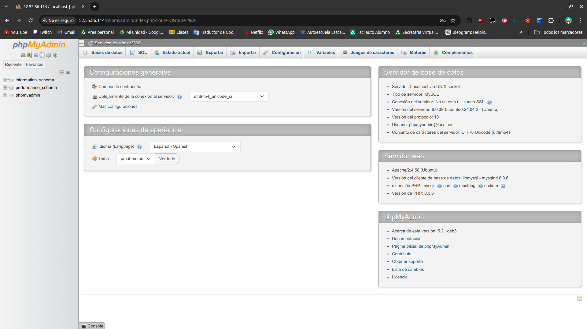
2.3 Instalacion de Adminer
Paso 1: Creamos un directorio para adminer
mkdir -p /var/www/html/adminer
Paso 2: Instalamos Adminer
wget https://github.com/vrana/adminer/releases/download/v4.8.1/adminer-4.8.1-mysql.php -P /var/www/html/adminer
Con el comando wget nos descargamos el archivo de adminer y con el parámetro -p le indicamos la ruta donde lo queremos guardar.
Paso 3: Renombramos el nombre del script de Adminer
mv /var/www/html/adminer/adminer-4.8.1-mysql.php /var/www/html/adminer/index.php
[!TIP]
Renombramos el directorio ya que el nombre que tiene es muy largo y lo cambiamos a uno mas común con el archivo delindex.phppara que el servidor apache lo pueda reconocer más fácil.
Paso 4. Modificamos el propietario y el grupo del archivo
chown -R www-data:www-data /var/www/html/adminer
Una vez más tenemos que darle permisos al grupo y usuario de apache para que pueda leer el archivo.
Paso 5: comprobación de que la página adminer funciona
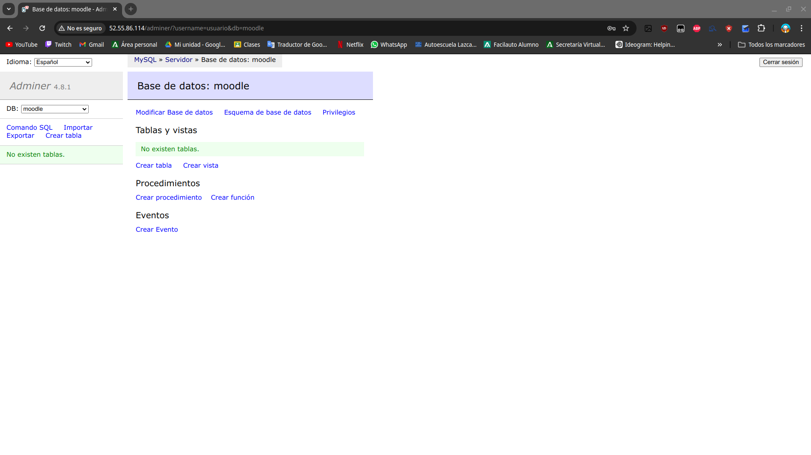
2.4 Instalacion de la herramienta GoAcces
Paso 1. Instalamos la herramienta goaccess
apt update
apt install goaccess -y
Paso 2. Creamos un directorio para los informes estadisticos
mkdir -p /var/www/html/stats
Paso 3. Ejecutamos GoAccess en background
goaccess /var/log/apache2/access.log -o /var/www/html/stats/index.html --log-format=COMBINED --real-time-html --daemonize
Esto lo hacemos para generar los informes en segundo plano. Para ejecutarlo en segundo plano podemos utilizar el parámetro --daemonize
3. Control de acceso a un directorio con autenticación básica
Paso 1: Copiamos el archivo de configuracion de stats
cp ../conf/000-default.stats.conf /etc/apache2/sites-available
[!IMPORTANT]
Tenemos que hacer otro archivo de configuración llamado000-default.stats.confy copiarlo en los sitios disponibles de apache para que lo podamos habilitar más tarde.
El archivo000-default.stats.conftiene que quedar como en la imagen: 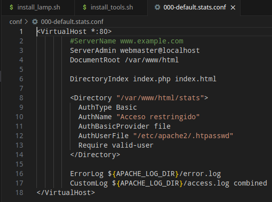
Paso 2: Deshabilitamos el virtualhost que hay por defecto
a2dissite 000-default.conf
Esto lo hacemos para poder habilitar el otro archivo que hemos copiado, es decir, el 000-default.stats.conf.
Paso 3: Habilitamos el nuevo virtualhost
a2ensite 000-default.stats.conf
Paso 4: Hacemos un reload al servicio apache
systemctl reload apache2
Paso 5: Creamos el archivo de contraseñas
htpasswd -bc /etc/apache2/.htpasswd $STATS_USERNAME $STATS_PASSWORD
Esto se hace para que sea más seguro y pida un usuario y contraseña a la hora de entrar a la página web
4. Control de acceso a un directorio con .htaccess
Paso 1: Copiamos el archivo de configuracion de .htaccess
cp ../conf/000-default-htaccess.conf /etc/apache2/sites-available
[!IMPORTANT]
Tenemos que hacer otro archivo de configuración llamado000-default-htaccess.confy copiarlo en los sitios disponibles de apache para que lo podamos habilitar más tarde.
El archivo000-default-htaccess.conftiene que quedar como en la imagen: 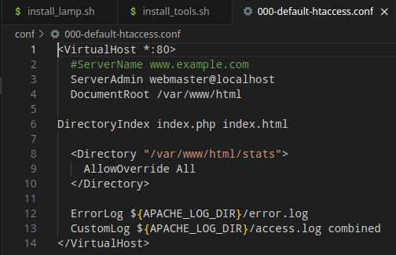
Paso 2: Deshabilitamos el virtualhost 000-default-stats.conf
a2dissite 000-default.stats.conf
Paso 3: Habilitamos el nuevo virtualhost 000-default-htaccess.conf
a2ensite 000-default-htaccess.conf
Paso 4: Hacemos un reload al servicio de apache
systemctl reload apache2
Paso 5: Copiamos el archivo .htaccess a /var/www/html/stats
cp ../conf/.htaccess /var/www/html/stats
[!IMPORTANT]
Tenemos que hacer un archivo de configuración llamado.htaccessy copiarlo en la ruta destatspara que coja la configuración del archivo y al entrar a la web nos pida las credenciales necesarias.
El archivo.htaccesstiene que quedar como en la imagen: 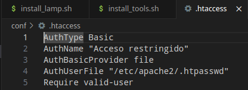
Paso 6: comprobación de que la autenticación funciona
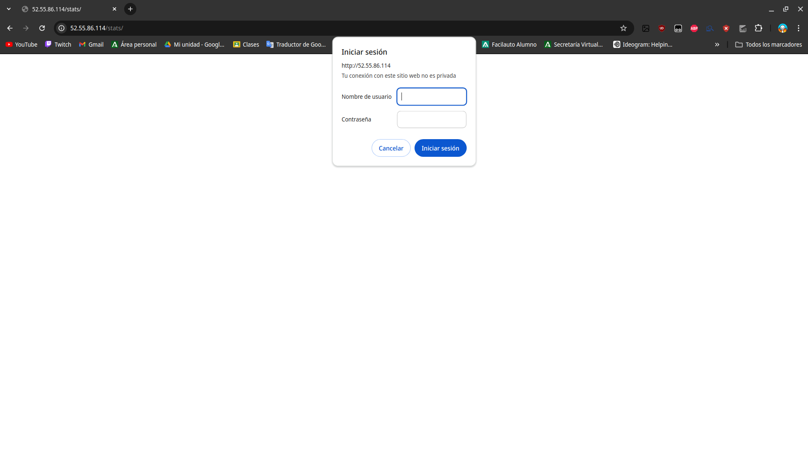
Paso 7: comprobación de que la página funciona
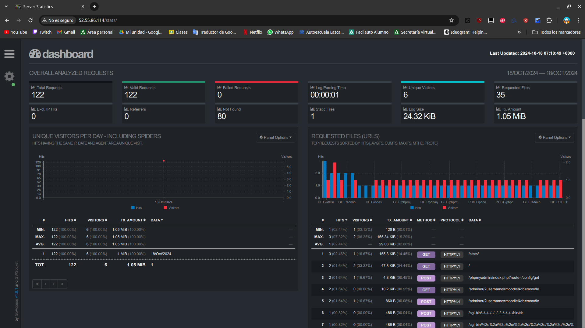